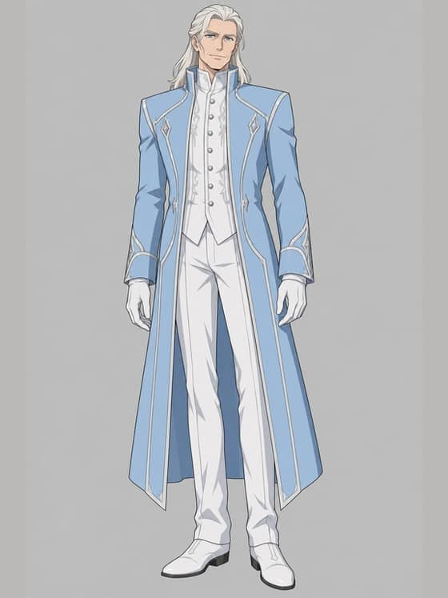
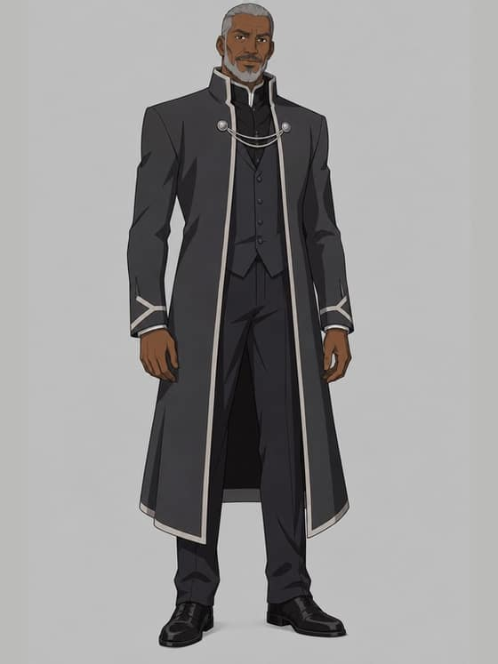
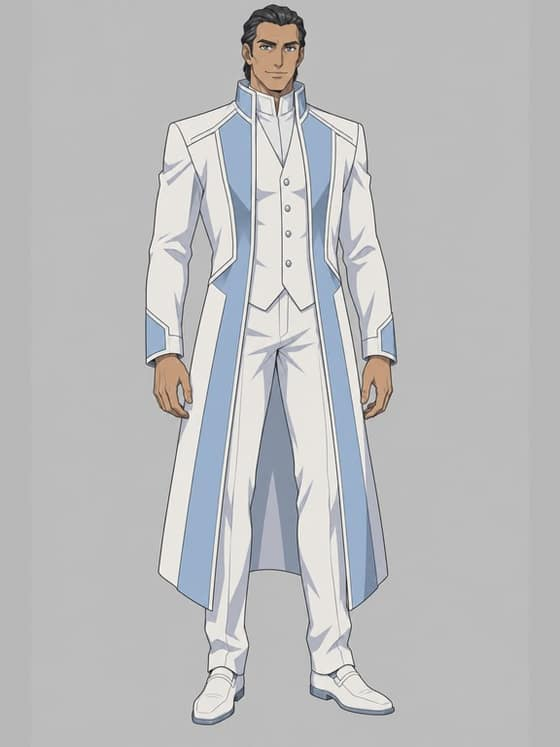
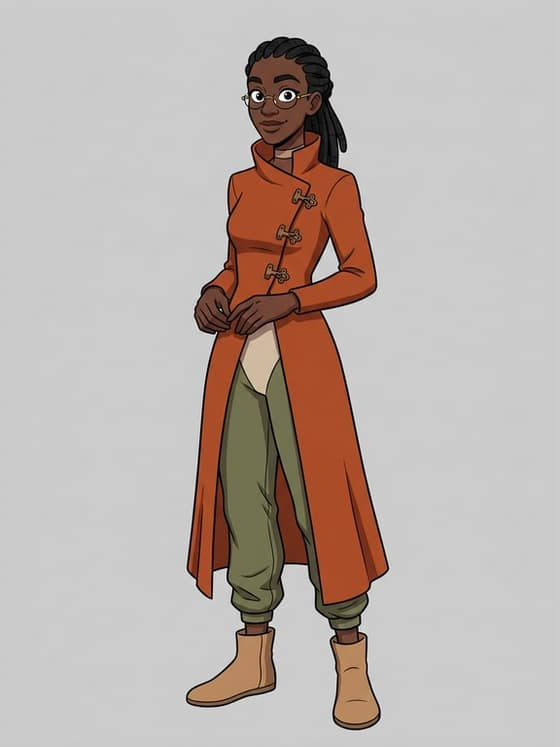

Lord EphelionDRAFT
Groundwork for a mid-challenge drop around 19–20 November: what the book says about Lord Ephelion, a look-line draft for the owner, and three base candidates in the challenge’s Animated series look.
The book never describes how he looks. It gives his title, his role, that he is a man, and that he is seen on screens and posters. Every visual detail below is this edition’s invention and is marked so.
Spent: $0.13 of a $1.50 cap (3 pictures and 3 prompt checks). AI-generated candidates, not published. Drafted by the coding agent (Claude, a closed model by Anthropic). DRAFT until the owner approves it.
What the book says
| Detail | Block | Words |
|---|---|---|
| Titled Lord; the Arctic Empire’s consul to Veridia | c3-b5, c13-b64 | “Lord Ephelion” / “Arctic Empire consul to Veridia.” |
| Also called the Arctic ambassador; debates Professor Sylka live | c8-b17 | “Lord Ephelion, Arctic ambassador to Veridia” |
| A man | c21-b76 | “So he's openly saying a version of the Arctic cause” |
| Seen as an image on screens; his messages on posters | c13-b63, c6-b143 | “An image of Lord Ephelion appeared on the left side of the screen” / “the poster with Lord Ephelion's message” |
| Gives sermons and speeches | c11-b109, c16-b101, c24-b40 | “Lord Ephelion giving his sermons all the time” |
| A propagandist | c21-b75 | “Ephelion and Delwart are not intellectuals, they are propagandists.” |
| Was in Northglade at the invasion | c20-b8 | “Lord Ephelion, Arctic consul to Veridia, was in Northglade at the time of the invasion.” |
| Looks: face, age, skin, hair, eyes, build, clothes | none | The book says nothing. |
This edition’s existing descriptor
content/snowmoon/designs/characters/ephelion.json says the book never describes his appearance and calls its look invented. Beyond the book: every visual detail (in his fifties, tall and imposing, pale skin with a cool undertone, a chiselled face, long platinum-white hair, pale-blue eyes, an ice-blue faceted coat with a towering collar, a white half-cape, a white bodysuit, silver seams, white gloves) is this edition’s invention. One citation is off: its fact “male” cites c8-b37 (“A gifted demagogue, he concluded.”), where “he” is Gladias concluding; c21-b76 is the block that shows Ephelion is a man.
Look line (draft)
Base candidates
GPT Image 2.5 from text alone, whole figure, one person, front-facing, plain light-grey background, in the Animated series look (its exact style text), 1024 × 1536 fitted to the bases’ 576 × 768. All three prompts passed the prompt check. The coats and colours are this edition’s invention.

858fa6dc49f0b26434e46d9bf0ccecc576941a0eaac54ac5d2e8b304db3fc28f · $0.0420
92ab84746c1576528af68ecba67791a4d82762a021d1699cd879d7f78bf77e93 · $0.0419
8e7ff7ab3fc00519e69396a16d5691d825afd3f1e9349c03441867ba355cb66a · $0.0419The six published bases, for comparison





The passages, word for word
Every block that names him, in the book’s order (HTML tags removed, words kept). His debate turn in chapter 8 does not name him in each block; those blocks follow, as his words by the chapter’s turn order.
Chapter 3
c3-b5From a comfortable Veridia to a strong Veridia
Veridia is a beautiful country, you are told in school. You see it every day: the trees, the mountains, the houses and buildings all trying to eke out another few basis points reduction in land tax.
But you know, in your heart, that there is a problem. When did Veridia last go to space? Twenty years ago. When was Veridia's tallest building built? Forty years ago. Why? Because all your institutions - the Steering system, the Graph Funding mechanism, and the very culture - are built around making people comfortable and happy in the present, with no concern for tomorrow.
Meanwhile, look at the Arctic Empire. Where is the housing, the transportation, the industry being built the fastest? In the Arctic Empire. All the scientists working to make people live longer? In the Arctic Empire.
What does Veridia say to those scientists? Living longer is not that important. Death and birth are okay, they are the natural cycle of life. Yes, that's what they believe. The natural cycle of life is the best they have for morality - by that same twisted logic, any injustice could be natural, like a tiger eating a rabbit.
Veridia's vision of nature is like a plant. Beautiful, but never rising up above its stature. Our vision of nature is like a lion. If this vision appeals to you, if you want Veridia to be stronger, to reach for the stars, to aim beyond incremental public health and seek eternal life, then Veridia needs you, the next generation of leaders, to take charge. Don't mind the mob. Build the future. Join us, and we will build it together.
With regards,
Lord Ephelion
Arctic Empire consul to Veridia.
Chapter 6
c6-b143He kept walking, went across the sky bridge, and into the tunnel. He got to the Y-shaped intersection. This time, the poster with Lord Ephelion's message was gone. After stopping for a moment, for what might have been only the second time in his life, Gladias turned left at the intersection. He kept walking forward.
Chapter 8
c8-b17"Veridia National University", the header at the top of the view on the passenger's hand device said. "Live debate between Professor Sylka, president of VNU, and Lord Ephelion, Arctic ambassador to Veridia".
c8-b26Sylka paused. Lord Ephelion started speaking.
c8-b34"Order, please. Ephelion has the floor.", the moderator interjected.
c8-b36Ephelion stopped, and Sylka cleared her throat, preparing to speak. At that point, Gladias realized that the autobus door was open, and it was already at his destination. He quickly ran out, and Emerald automatically paused the livestream to help him concentrate.
c8-b37His mind lingered on the debate for a moment longer, and he noticed with faint irritation how easily Ephelion's sentences arranged themselves into an argument that seemed to make sense on its own terms. A gifted demagogue, he concluded. He then refocused on what lay ahead.
c8-b88"But I think he underestimates Veridians, and just how smart many of them are. I was on the autobus coming here, when Sylka was debating Ephelion on how to measure social progress, and people seemed really engaged when she was speaking."
Chapter 11
c11-b109"They're a super opaque society, the only evidence we have that the Arctics even know Veridia exists is that we have to listen to Lord Ephelion giving his sermons all the time."
Chapter 13
c13-b11Delwart sighed. "There's been decades of propaganda on all this stuff. Honestly, the Arctics are not making a great case for themselves; everything they do, their drone patrols near Redshire, even Ephelion's speeches, it just always aggravates people so much."
c13-b63An image of Lord Ephelion appeared on the left side of the screen, and a multi-paragraph message on the right side.
c13-b64The Dead Hand of Egalitarianism, and the Path of Strength
All humans are equal, the schools, the posters, the songs, and everything else in Veridia is telling you.
Maybe not Dreadknot - but that's exactly why Dreadknot's taxes were bumped up to tier 4 in the audit last year.
Nobody is better than anyone else, and if you even dare claim that one human being is better than another, then you are immediately cast out as evil in Veridia.
But there is a fundamental flaw in this kind of thinking. If one human being cannot be better than another human being, then that also implies that a human being cannot be better than their former self. Denying the possibility of hierarchy, of vertical difference between people, the fact that there are traits that everyone agrees are good, but that only some actually manage to achieve, is thus also denying the possibility of self-improvement.
Do not think that the idea that there are multiple dimensions to goodness and to success saves you from this. Even if there are, some people perform better, and others perform worse, across all the dimensions that matter.
Stop looking to society for answers, to Veridia's institutions to make life fair. Life is not fair - and should not be fair. Embrace the competition. Today, you may be weak. But you have it in you to be strong. Do not believe the lie that you are adequate just the way you are. But do believe a truth - the truth that you have it in you to become strong. Take that opportunity. Grow stronger. Grow so strong, that you later look upon your former self with shame.
And find the other strong people, the people who will help you on your journey of striving for greatness. Not those who will love you unconditionally - that is slow-burning poison, like sweet candy. But those who will give you love when you win, and a cold shoulder when you lose. Those that give you both the incentive, and the disincentive. You are not good because you are human, you are good because you can win. Only thus, can you train your mind to love winning, and achieve your true potential.
With regards,
Lord Ephelion
Arctic Empire consul to Veridia.
Chapter 16
c16-b101Message
To
You unplugged the screen in the restaurant when it was showing Lord Ephelion's speech.
→
Seila
Send
Chapter 20
c20-b8At 5,250 this morning, Arctic soldiers, flying vehicles and drones descended on the province of Northshore from all sides.
The Veridian military offered almost no resistance, and within two longhours their soldiers and drones were stationed in Northglade.
The entire area is now fully under Arctic control, with only one exception. The Greater Plum Harbor inside Northglade has remained untouched by the Arctics, and seems to be at present respected as some kind of neutral zone. Hundreds of refugees streamed into the Greater Plum Harbor, before the Arctics set up barricades to stem any further entrances. More refugees attempted to enter on personal copters. About half succeeded, especially in the first longhour, and others were shot down.
Internet communications between Northglade and the rest of Veridia have been cut, except for the Greater Plum Harbor. Long-distance transmissions between the Greater Plum Harbor and the rest of Northglade, which are evading the jamming mechanisms, are now the main channel of two-way communication with the province of Northshore.
Neither local Northshore politicians nor Arctic officials have yet made any public comment. As of our last knowledge, Lord Ephelion, Arctic consul to Veridia, was in Northglade at the time of the invasion. We await further information.
Chapter 21
c21-b44Seila herself had seen through the Silverchat ruse within a day - really, she had felt doubts within minutes. But she had not gone further quickly enough. She had entertained the thought that it might be the Arctics, but she had dismissed it - none of Delwart's lines seemed anything like anything she had ever heard from Lord Ephelion. Why would an Arctic say anything nice about peace and freedom? But now the picture had all come together. When you have eliminated the impossible, whatever remains, how improbable, must be the truth.
c21-b73"That's really hard to believe. Nothing he has ever said to me sounds anything like Lord Ephelion."
c21-b75"Ephelion and Delwart are not intellectuals, they are propagandists. Their goal is not to seek and share what they think is the truth. Their goal is to adjust the discourse environment, either of one person or of a whole country, so suit their interests. To turn bystanders into friends, and enemies into bystanders."
c21-b76"Ephelion's goal is to inspire people inside Veridia to join the Arctic cause. So he's openly saying a version of the Arctic cause that some smart, but sick and twisted, people in Veridia will find appealing."
Chapter 23
c23-b84"She was in some kind of chat group, and they were sharing Arctic propaganda. Cheering on Lord Ephelion's messages. Hoping that the Arctics would come to the rest of Veridia soon."
Chapter 24
c24-b40"I just learned that Lily has been eating up Arctic propaganda for the last year, and Lord Ephelion's sermons made her feel valued and appreciated more than I ever did. And less than a minute later, I learned that she ran away from home. And a minute after that, I learned that Seila now hates me and doesn't want to talk to me."
c24-b48"My parents died when I was very young. In an explosion, triggered by the Arctics. I grew up with my aunt, who basically just ignored me. No one loved me unconditionally. I had to start figuring out how to earn money on my own when I was twelve. I learned all my social skills from that. The only appreciation from other human beings that I got, was when I provided something of value to them, or when I impressed them with my success. The loop that you said Ephelion talks about, of love as a reward for winning, that was my childhood. And, I got second place in the Pafogai Du Minpentai games because of that."
c24-b54"When you hugged me a few minutes ago, were you not offering exactly the thing that Ephelion says is poison? Love as a reward for weakness?"
Chapter 26
c26-b69"That's definitely how Ephelion would see it. Of course, Sylka would get upset and say they're hiding the hidden cost - if you can live longer but it depends on ongoing infusions of proprietary Arctic medicine, you become dependent on them for your life, you become their slave. Though Ephelion would say that being dead - being inside a coffin where you are not free to move a single muscle or think a single thought - is the worst slavery of all. And that that's not just true for a person, it's true for a civilization."
Chapter 27
c27-b74"Do you remember Ephelion's debate with Sylka?"
c27-b76"Ephelion said: most of the 'softer' traits in society seem to move in circles. The good creates the seed of the bad, and the bad creates the seed of the good. Disaster to heroism to prosperity to complacency to disaster. Technocracy to democracy to chaos to strongman to technocracy. And so on. The only thing that doesn't behave that way is economic output: growth just keeps compounding on itself. And so we should stop trying to accelerate the thing that goes in circles, and instead just focus on growing economic output. I dislike that argument. It makes me uncomfortable what it implies. But I still can't quite put my finger on what's wrong with it. What do you think?"
c27-b78"So in other words, the eigenvector that Ephelion talked about includes more than just one single dimension - which is actually what most eigenvectors are like."
c27-b87Gladias could see Seila frowning with discomfort. His mind raced as he tried to come up with other arguments against Ephelion's way of thinking.
c27-b90"There is this underlying model that Ephelion is implying, where there's a vector that's shooting outward toward infinity, and the faster it goes toward infinity the faster everyone is happy. But that's not how I see the world at all."
His debate turn, c8-b27 to c8-b35 (unnamed blocks)
c8-b27"There has now been a century-long tradition of people trying to make better metrics than gross economic output. But what we have seen is that especially over the long term, the countries that perform best on any of those metrics are precisely the ones whose economic output is highest."
c8-b28"And there is a deep reason for this. Historians have long understood that many phenomena in society move in cycles. The ancients talked about a cycle: flourishing, pride, arrogance, downfall, suffering, rebirth, and then flourishing once again. They said the same thing about governance, and how it inevitably cycles between technocratic, democratic, chaotic and strongman."
c8-b29"Whenever we talk about the inevitability of rises and falls, it is precisely these 'softer' traits like 'societal cohesion', 'freedom' and 'well-being' that move in this fashion. On those dimensions, the dominant transformation is a rotation: good creates the generator of the bad, which creates the bad, which creates the generator of the good once more."
c8-b30"And let us be real: these 'softer' traits that people are targeting, they're chosen by committees of priests - selected not for competence, but for echoing whatever ideology strikes people's fancy at the time."
c8-b31"There is only one thing that stands out from this pattern and offers a truly lasting improvement: the relentless march of economic growth, enabled by the unceasing progress of science, technology, and capital accumulation. While the emotional vibrations in a society cycle between the pride of success, and the desperation of collapse and defeat, with every cycle, people are smarter and richer than before."
c8-b35"And so if you want to truly improve a society, in a way that provides lasting value for the long term, you do not focus on the thing that moves in cycles. You do not focus on accelerating the rotation. Instead, you focus on increasing the largest eigenvector. You focus on affecting the thing that has a thousand-year record of compounding on itself, the vector on which good reliably leads to more good. And you let the rest follow the natural laws as it may."